16 Nested Virtualization¶
16.1 Inleiding¶
Het concept van nested virtualisation (geneste virtualisatie) laat zien hoe meerdere lagen van virtualisatie en isolatie kunnen worden opgebouwd, waarbij elke laag onafhankelijk opereert en specifieke taken kan uitvoeren.
Beschrijving van de lagen:
-
Fysieke Hardware (Layer 1)
Dit is de laag van je fysieke computer. Bijvoorbeeld, je hebt een desktop of laptop met een CPU, RAM, opslag, enzovoort. -
Besturingssysteem (Layer 2)
Op de fysieke hardware draait het basis besturingssysteem van je computer, bijvoorbeeld Windows 10 of Windows 11. -
Hypervisor (Layer 3)
Op je Windows 11 machine heb je een hypervisor geïnstalleerd, in dit geval VMware Workstation Pro. -
Virtuele Machine (Layer 4)
Binnen VMware Workstation Pro heb je een virtuele machine (VM) gecreëerd. Deze VM heeft zijn eigen besturingssysteem. Bijvoorbeeld Proxmox. -
VM (Layer 5)
Binnen Proxmox ga je VM’s draaien. Hiervoor heb je nested virtualization nodig.
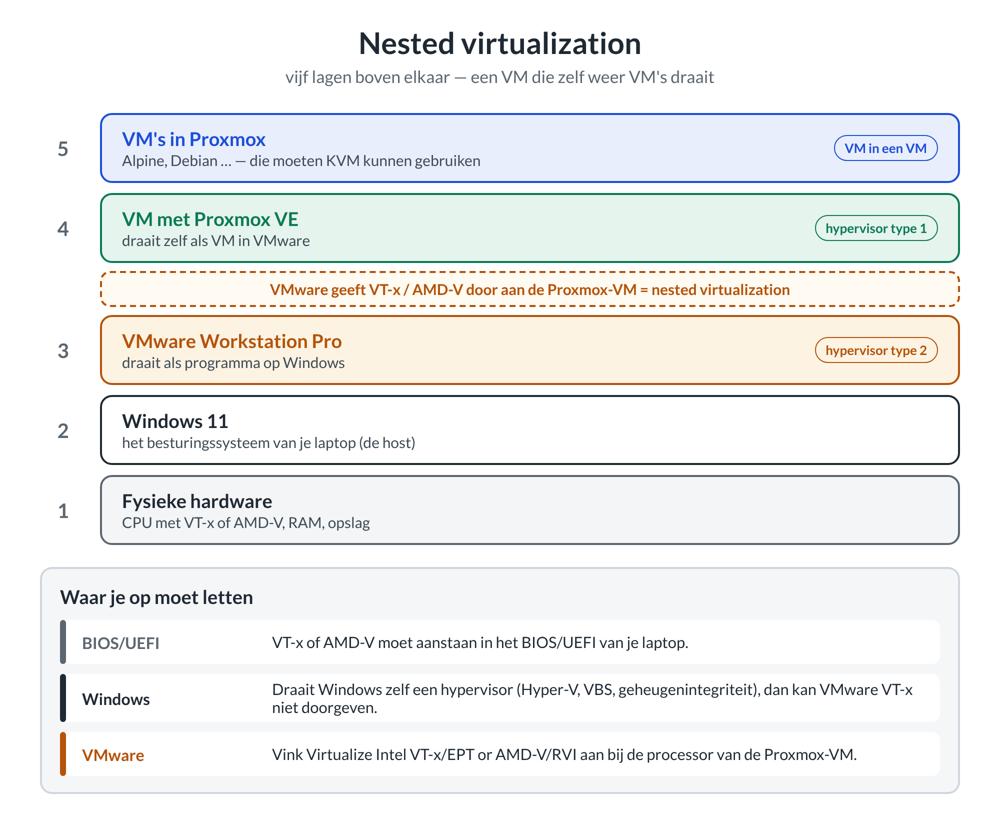
16.2 Nested virtualization aanzetten voor VMware Workstation¶
16.2.1 Instellen voor VM¶
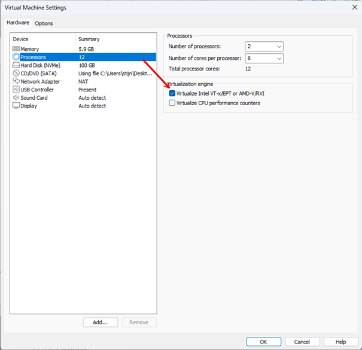
Bij Virtualization engine kan je 2 items aanvinken:
- Virtualize Intel VT-x/EPT of AMD-V/RVI
Deze optie is vooral nuttig voor nested virtualization, waarbij je virtuele machines binnen andere virtuele machines draait.
Door VT-x of AMD-V te virtualiseren, kan de gast-VM zelf ook hypervisors uitvoeren, zoals Hyper-V, KVM of ESXi.
Deze instelling moeten wij uiteraard aanzetten.
- Virtualize CPU Performance Counters
Deze instelling stelt virtuele machines in staat om gebruik te maken van de CPU-prestatieregisters van de fysieke CPU. Prestatieregisters worden vaak gebruikt voor het verzamelen van gedetailleerde prestatiegegevens en statistieken over de CPU-activiteiten.
Laat deze instelling uit staan.
16.2.2 Problemen Nested Virtualization oplossen¶
Het kan voorkomen dat Nested Virtualization in eerste instantie niet werkt op je laptop wanneer je een VM start met de gewijzigde instellingen.
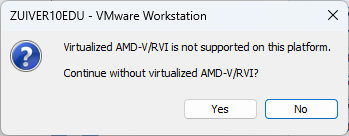
Wil je nested virtualization gebruiken, dan moet je dit oplossen. De ervaring leert dat je op een AMD-processor meer moet aanpassen dan op een Intel-processor, maar op beide kan je nested virtualization instellen.
Opgelet: nested virtualization is een keuze, geen verplichting voor de lessen Virtualization.
Je kan de cursus volledig volgen zonder nested virtualization. Proxmox draait je VM's dan zonder KVM: dat is trager, maar het werkt. Containers werken gewoon. Waar dat nodig is, volg je dan de route met Debian.
De instellingen die nodig zijn voor nested virtualization schakelen onderstaande uit:
-
Geheugenintegriteit (HVCI) houdt malware en kwaadaardige stuurprogramma's uit de kern van Windows.
-
Credential Guard beschermt je wachtwoorden en aanmeldgegevens tegen diefstal door malware.
-
Firmwarebeveiliging controleert bij het opstarten of er niet met de firmware geknoeid is.
Updates en Defender zijn de basis. Ze houden het grootste deel van de aanvallen tegen.
De instellingen die je uitzet, zijn een extra laag tegen zwaardere aanvallen.
Zet de beveiliging terug aan zodra je nested virtualization niet meer nodig hebt (zie Beveiliging terugzetten).
16.2.2.1 Met een script¶
Het script nestedvirtualization.ps1 controleert je laptop en zet in één keer alle instellingen goed die verderop met de hand beschreven staan: Hyper-V, de Windows-onderdelen, geheugenintegriteit, firmwarebeveiliging en Device Guard. Het werkt op Windows 10 en 11: Home, Pro en Education.
Open PowerShell als administrator: klik met de rechtermuisknop op Start en kies Windows Powershell (beheerder).
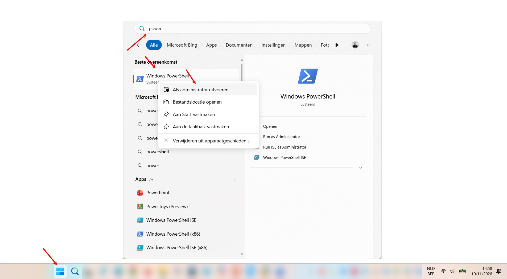
Download het script naar je homemap:
PS C:\WINDOWS\system32> Invoke-WebRequest https://pxl-virtualization.github.io/downloads/nestedvirtualization.ps1 -OutFile "$HOME\nestedvirtualization.ps1"
Controleer eerst je laptop. Het script verandert dan nog niets:
PS C:\WINDOWS\system32> powershell -ExecutionPolicy Bypass -File "$HOME\nestedvirtualization.ps1"
Elke regel met [!!] is een instelling die nested virtualization tegenhoudt. Pas de instellingen toe:
PS C:\WINDOWS\system32> powershell -ExecutionPolicy Bypass -File "$HOME\nestedvirtualization.ps1" -Apply
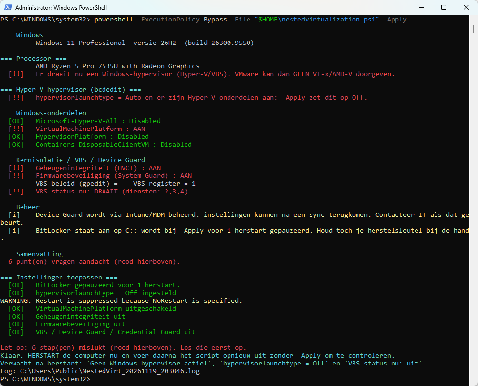
Herstart de laptop.
Voer daarna het script opnieuw uit zonder -Apply. Je moet nu Geen Windows-hypervisor actief en VBS-status nu: uit zien.
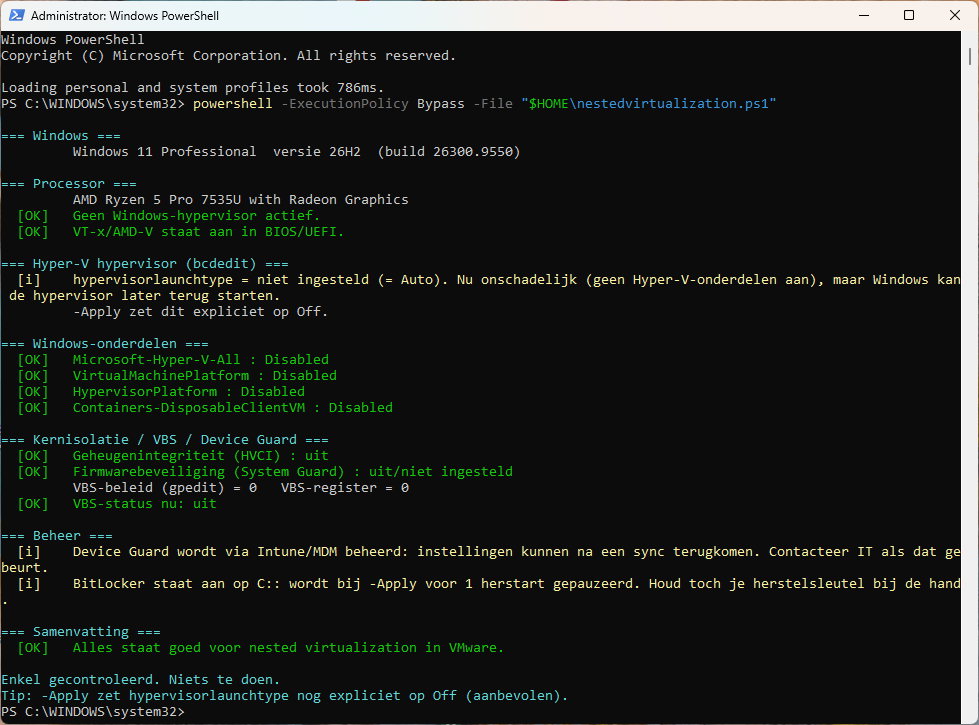
Goed om te weten:
-
Staat BitLocker aan, dan pauzeert het script BitLocker voor één herstart. Zo hoef je na de herstart je herstelsleutel niet in te geven.
-
Het script schrijft een logbestand in C:\Users\Public. Dat kan je doorsturen als het niet lukt.
-
Zonder Hyper-V werken WSL2, Docker Desktop en Windows Sandbox niet meer.
-
Op Windows Education staat Credential Guard standaard aan. Het script zet ook dat uit.
-
Meldt het script dat Device Guard via Intune of MDM opgelegd wordt, dan kan je het niet zelf uitzetten. Neem dan contact op met de IT-dienst.
-
Met -VmxPath zet het script ook het vinkje Virtualize Intel VT-x/EPT or AMD-V/RVI in je VM, bijvoorbeeld -VmxPath "D:\VMs\pve\pve.vmx". VMware moet dan gesloten zijn.
16.2.2.2 Met de hand¶
Werkt het script niet, of wil je zelf zien wat er verandert, volg dan deze stappen. Niet alles bestaat op elke editie van Windows. Welke editie je hebt, zie je bij Instellingen > Systeem > Info. Windows Education werkt zoals Pro: overal waar Pro staat, geldt hetzelfde voor Education.
Overzicht:
| Stap | Windows Home | Windows Pro / Education |
|---|---|---|
| 1. Hyper-V-hypervisor uit (bcdedit) | ja | ja |
| 2. Windows-onderdelen uit | Platform voor virtuele machine, Windows Hypervisor-platform | idem, plus Hyper-V en Windows Sandbox |
| 3. Geheugenintegriteit uit | ja | ja |
| 4. Firmwarebeveiliging uit | ja, als je laptop het heeft | ja, als je laptop het heeft |
| 5. Device Guard (VBS) uit | via het register | via gpedit.msc |
Herstart de laptop na de stappen en start je VM opnieuw. Zie je de foutmelding van VMware niet meer, dan ben je klaar.
- Zet de Hyper-V-hypervisor uit (Home en Pro)
Voer dit uit in PowerShell als administrator en herstart daarna de laptop:
bcdedit /set hypervisorlaunchtype off
-
Deze opdracht zorgt ervoor dat Windows de Hyper-V-hypervisor niet meer start.
-
Zolang Hyper-V draait, gebruikt het zelf de virtualisatiefuncties van de CPU (VT-x of AMD-V). VMware kan ze dan niet doorgeven aan je VM.
-
Start daarna je VM opnieuw en kijk of de foutmelding weg is.
Werkt het nog niet, ga dan verder met de volgende stappen.
- Zet Windows-onderdelen uit (Home en Pro)
Ga naar Configuratiescherm > Programma's > Programma's en onderdelen > Windows-onderdelen in- of uitschakelen. Zet uit wat je in de lijst ziet staan:
-
Hyper-V (enkel Pro)
-
Platform voor virtuele machine (Home en Pro)
-
Windows Hypervisor-platform (Home en Pro)
-
Windows Sandbox (enkel Pro)
Op Windows Home bestaan Hyper-V en Windows Sandbox niet: je ziet ze dan gewoon niet in de lijst. Let op: zonder Platform voor virtuele machine werken WSL2 en Docker Desktop niet meer.
- Zet geheugenintegriteit uit (Home en Pro)
Geheugenintegriteit is een onderdeel van kernisolatie. Het beschermt Windows tegen malware door gevoelige processen af te zonderen. Daarvoor start Windows zijn eigen hypervisor, en dan kan VMware VT-x niet meer doorgeven.
Zet geheugenintegriteit als volgt uit:
-
Ga naar Start, Instellingen.
-
Klik links op Privacy en beveiliging.
-
Klik rechts op Windows-beveiliging.
-
Kies voor Apparaatbeveiliging.
-
Klik op Kernisolatiedetails.
-
Zet Geheugenintegriteit uit.
-
Start de computer opnieuw op.
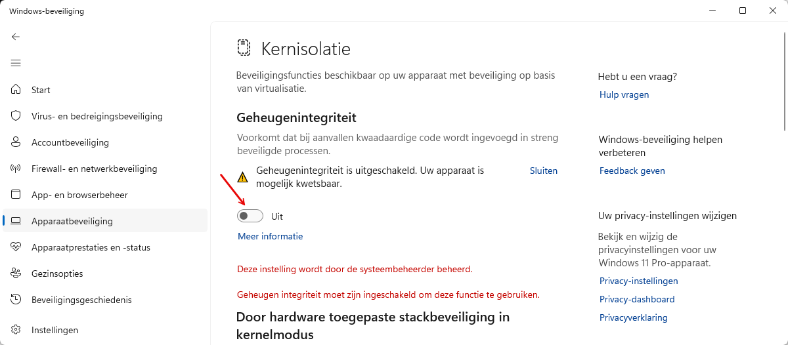
- Zet firmwarebeveiliging uit (Home en Pro, als je laptop het heeft)
Firmwarebeveiliging (System Guard Secure Launch) zie je enkel op laptops die het ondersteunen. Staat de optie er niet, sla deze stap dan over. Ook firmwarebeveiliging gebruikt de hypervisor van Windows en kan nested virtualization tegenhouden. Opgelet: nadat je ze uitzet, vraagt Windows bij het aanmelden soms je wachtwoord in plaats van je pincode.
Zet firmwarebeveiliging als volgt uit:
-
Ga naar Start, Instellingen.
-
Klik links op Privacy en beveiliging.
-
Klik rechts op Windows-beveiliging.
-
Kies voor Apparaatbeveiliging.
-
Klik op Kernisolatiedetails.
-
Zet Firmwarebeveiliging uit.
-
Start de computer opnieuw op.
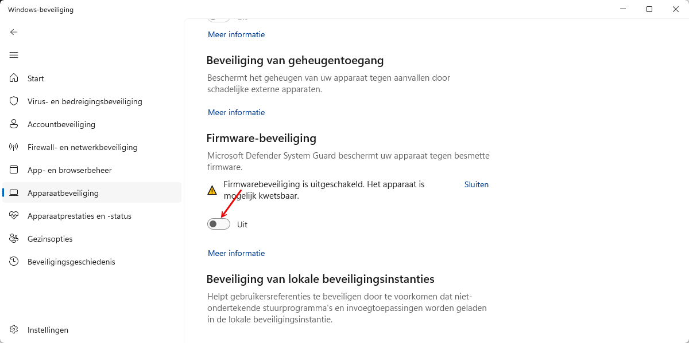
- Zet Device Guard (VBS) uit
Op Windows Pro en Education doe je dat met het lokaal groepsbeleid:
-
Druk op Windows+R, typ gpedit.msc en druk op Enter.
-
Ga naar Computerconfiguratie > Beheersjablonen > Systeem > Device Guard.
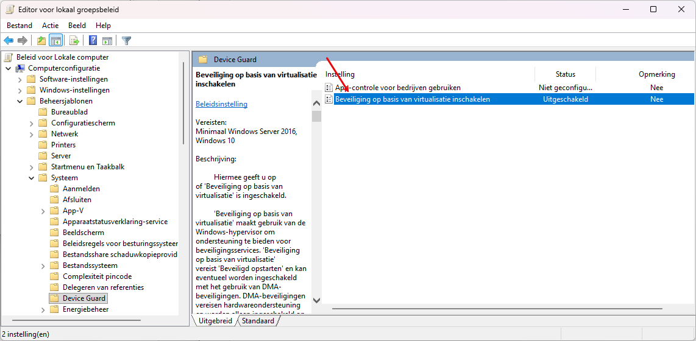
-
Dubbelklik op Beveiliging op basis van virtualisatie inschakelen.
-
Kies in het venster dat verschijnt voor uitschakelen.
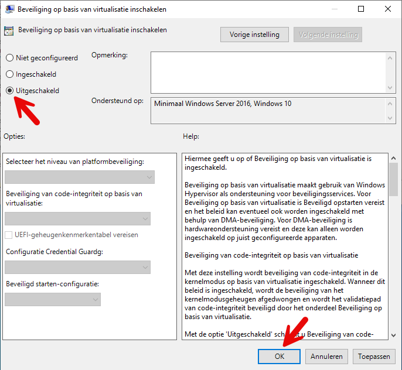
Windows Home heeft geen gpedit.msc. Daar zet je dezelfde instelling in het register. Voer dit uit in PowerShell als administrator en herstart daarna de laptop:
reg add "HKLM\SYSTEM\CurrentControlSet\Control\DeviceGuard" /v EnableVirtualizationBasedSecurity /t REG_DWORD /d 0 /f
16.2.3 Beveiliging terugzetten¶
Heb je nested virtualization niet meer nodig, bijvoorbeeld na de les, zet de beveiliging van Windows dan terug aan. Daarna werkt nested virtualization in VMware niet meer.
16.2.3.1 Met een script¶
Het script nestedvirtualization-terug.ps1 zet terug aan wat nestedvirtualization.ps1 uitzette: de Hyper-V-hypervisor, Platform voor virtuele machine (voor WSL2 en Docker Desktop), geheugenintegriteit, firmwarebeveiliging en VBS / Device Guard.
Open PowerShell als administrator en download het script naar je homemap:
PS C:\WINDOWS\system32> Invoke-WebRequest https://pxl-virtualization.github.io/downloads/nestedvirtualization-terug.ps1 -OutFile "$HOME\nestedvirtualization-terug.ps1"
Bekijk eerst wat het script zal doen. Het verandert dan nog niets:
PS C:\WINDOWS\system32> powershell -ExecutionPolicy Bypass -File "$HOME\nestedvirtualization-terug.ps1"
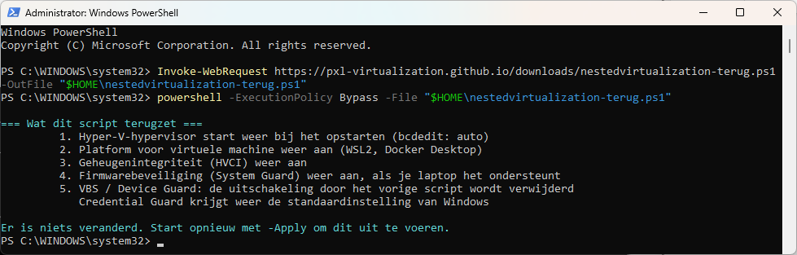
Zet de beveiliging terug:
PS C:\WINDOWS\system32> powershell -ExecutionPolicy Bypass -File "$HOME\nestedvirtualization-terug.ps1" -Apply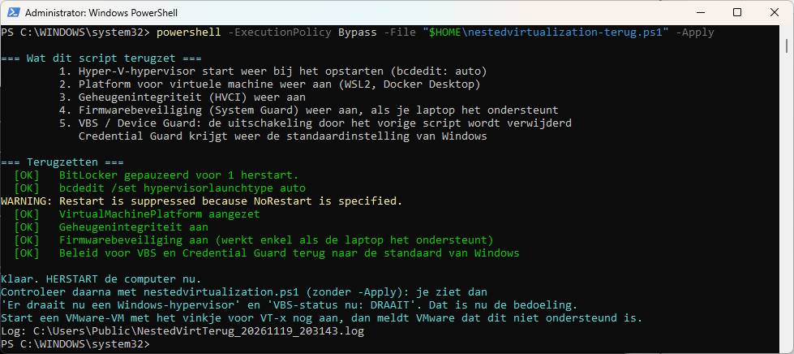
Herstart de laptop. Voer daarna nestedvirtualization.ps1 uit zonder -Apply. Je ziet nu Er draait nu een Windows-hypervisor en VBS-status nu: DRAAIT. Dat is nu de bedoeling.
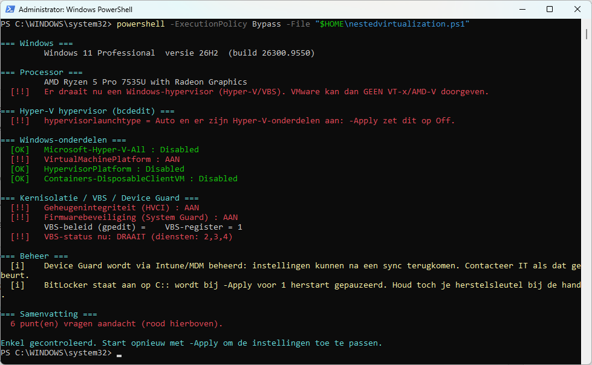
Goed om te weten:
-
Met -HyperV zet het script ook Hyper-V en Windows Sandbox weer aan. Dat kan enkel op Windows Pro en Education.
-
Met -VmxPath haalt het script het vinkje Virtualize Intel VT-x/EPT or AMD-V/RVI weg in je VM, bijvoorbeeld -VmxPath "D:\VMs\pve\pve.vmx". Anders meldt VMware bij het starten van die VM dat VT-x niet ondersteund is.
-
Het script zet de standaardinstellingen van Windows terug, niet noodzakelijk exact wat er vroeger stond.
-
Ook dit script pauzeert BitLocker voor één herstart en schrijft een logbestand in C:\Users\Public.
16.2.3.2 Met de hand¶
Doe de stappen van hierboven in omgekeerde volgorde.
Herstart de laptop.
16.3 Nested virtualization en Hyper-V¶
Hyper-V ondersteunt nested virtualization wel en dat werkt gewoon met geheugenintegriteit, VBS en Credential Guard aan. Hyper-V gaan opzetten valt buiten de doelstellingen van de cursus.